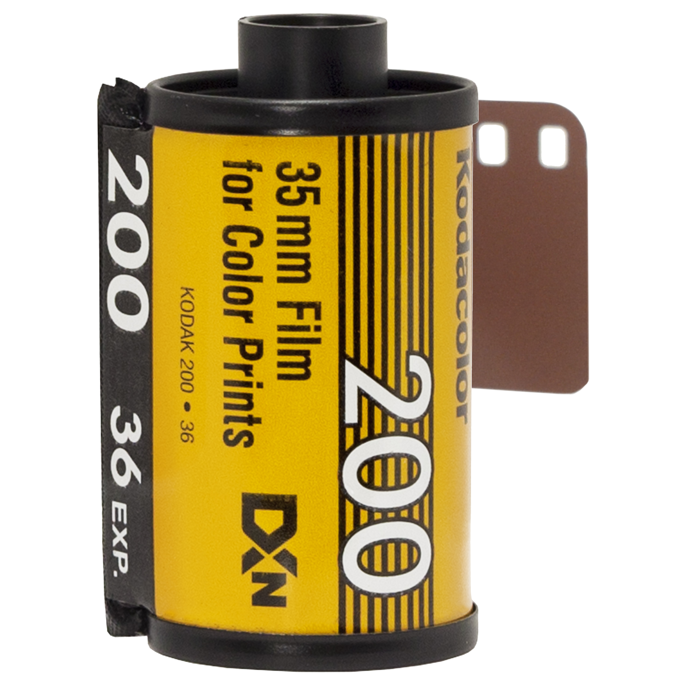

Todo sobre los rollos fotograficos
¿Que son los rollos fotograficos?
Los rollos fotograficos son el soporte en el cual las fotos tomadas se almacenan. Como deben ser revelados por un proceso especial, a diferencia de las fotos digitales, las analogicas no pueden ser vistas apenas son tomadas. Entre los tipos de rollos, el mas popular es el de 35mm.
Como poner y sacar un rollo 35 mm
El rollo 35mm

Es el rollo mas popular, el soporte de la mayoria de las camaras analogicas. Por lo general tiene espacio para 36 exposiciones (fotos), y vienen en formato color o blanco y negro.